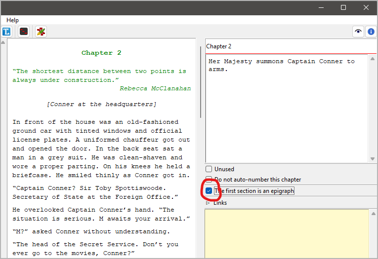

Basic concepts
Summary
With novelibre you can organize your novel on three hierarchical levels.
If you shorten your novel, you can exclude individual chapters and sections without deleting them immediately. You can also write sections with alternative text so that you can decide later what you want to include in the final version. To do this, change the type.
Part of organizing your writing project is keeping track of the qualitative progress of your work. With novelibre you can break this down to the section level using the section completion status and section notes.
novelibre offers a limited number of options for highlighting text.
Comments, footnotes and endnotes that you insert with Writer are not lost.
Language assignments for the spell checker in Writer are not lost.
So that you don’t get confused, novelibre can lock the project against changes as long as you are working with OpenOffice or LibreOffice.
The Book hierarchy
Parts
A novel is expected to be divided into chapters and sections. Parts are optional; technically they are first level chapters. However, in the novelibre project tree they are on the same level as the chapters, but they produce a heading one level above. Thus, parts are mainly for inserting first level headings between the chapters, if needed.
Hint
You can convert chapters into parts and vice versa by simply changing the level.
Note
A predecessor of novelibre was novelyst. There, the parts were on a higher hierarchy level in the project tree than the chapters, as it corresponds to logical perception. It was therefore possible to move parts together with their subordinate chapters, or to mark entire parts as “Unused”. In practice, however, this proved to be cumbersome. I find it easier to move only the part boundaries and leave the chapter order unchanged when defining parts.
Chapters
A novelibre project must at least have one chapter. In the exported documents, regular chapters have a second level heading.
For novelibre, the chapters only serve as containers for sections to which the actual dramaturgical function is assigned. This is why there are only a few chapter properties to be set.
Epigraph
If you want to preface a chapter or part with a poem or a quotation, you can set its first section to be the epigraph.
The epigraph appears in the exported ODT document between the chapter heading and the actual start of the chapter.
An epigraph differs from a regular section in that it is formatted using the Epigraph paragraph style. If you add a description to the epigraph, this will be placed below the epigraph as a source reference, formatted using the Epigraph source paragraph style.
Hint
You can temporarily exclude an epigraph from document export by changing its section type to Unused (see below).
Sections
All body text of a novel in novelibre belongs to sections. Sections can be scenes, pieces of exposition, descriptions, narrative summaries—it is entirely up to you how you divide your text into sections. There is a variety of metadata for sections for your free use.
In the text body of the exported documents, sections are separated by section dividers by default, like so:
* * *
However, if you need more fragmented sections when plotting and organizing than the reader should see later, you can also append sections to each other as new paragraphs with no section divider inbetween.
The image below illustrates both types of section transition. On the left, you can see a normal transition with a section divider. On the right, the fine horizontal line indicates that a new, appended section is beginning.
Part/chapter/section types
Each part, chapter, and section is of a type that can be changed via context menu or Part/Chapter/Section menu. The type can be Normal or Unused.
- Normal
“Normal” type parts, chapters, and sections are counted. The totals are displayed in the status bar.
“Normal” type sections are exported to the manuscript and included in the word count.
“Normal” type parts and chapters can have subelements of each type.
“Normal” type tree elements are color coded according to the coloring mode settings.
- Unused
You can mark parts, chapters, and sections as unused to exclude them from word count totals and export.
The subelements of unused parts and chapters are unused as well.
If you mark a section “Unused”, its properties are preserved.
Unused tree elements are displayed in gray.
Section completion status
You can assign a status to each “Normal” type section via context menu or Section menu. You can choose between Outline, Draft, 1st Edit, 2nd Edit, and Done.
You can choose a coloring mode to display sections in different colors depending on their completion status.
Optionally, you can declare one of the status to be the current work phase, and choose a coloring mode that highlights sections that are behind schedule.

Newly created sections are set to “Outline” by default.
Word counts by status appear in the Book properties.
Hint
The “sticky” section notes are intended for more detailed information on what still needs to be done for a section.
Characters and story world
You can define characters, locations, and items, and you can relate them to sections to keep track of their place in the story. There is also some metadata stored with novelibre, mainly as a quick reference that might come in handy when writing or editing.
Note
novelibre is not meant as a tool for extensive world building. For this, there is a plethora of dedicated applications, online and offline wikis, and notetaking software. However, novelibre offers the option of linking images and files with the characters, locations, and items to facilitate access if your external application allows this.
The nv_zim plugin connects the writing project with a Zim Desktop Wiki. This allows the elements of the narrative world to be linked to corresponding wiki pages.
Important
If you want to assign viewpoint characters to your sections, you first have to create the characters that come into question.
Formatting text
It is assumed that very few types of text markup are needed for a novel text. When importing from ODT, novelibre supports the following formats:
Emphasis style or italics.
Strong Emphasis style or bold.
Quotations (OpenOffice) resp. Block Quotations (LibreOffice) for paragraphs visually distinguished from the body text.
Heading 5, Heading 6, Heading 7, Heading 8, Heading 9 as subheadings or freely definable paragraph formats.
Unordered list item: Indented paragraph with a bullet.
Important
novelibre does not support combinations of “hard” character formattings such as bold and italics. When novelibre imports an ODT text document containing such combinations, italics “wins” in the form of the Emphasis style.
To ensure that there are no surprises here, you should avoid using hard formatting when writing and instead use the character styles Emphasis and Strong Emphasis. The extension emph can help with this.
Always keep in mind, that novelibre converts “hard formatting” (italics and bold) into character styles (“Emphasis” and “Strong emphasis”). If you want to undo the formatting applied in a previous session, it is best to reset the character style.
With OpenOffice Writer this is easily done with
Ctrl-M.With LibreOffice Writer you will have to apply No Character Style to the text text via the context menu, the Formatting (Styles) toolbar, or the Styles navigator.
The extension emph provides a toolbar with an “A” button for resetting the character style (version 3.0+).
The novelibre wiki provides some tutorial pages on this topic.
About document language handling
ODF documents are generally assigned a language that determines spell checking and country-specific character substitutions. In addition, Office Writer lets you assign text passages to languages other than the document language to mark foreign language usage or to suspend spell checking.
- Document overall
The project language (Language code acc. to ISO 639-1 and country code acc. to ISO 3166-2) can be set in the Book settings (right pane) under Document language.
- Text passages in sections
Paragraph-wise or inline text markup for other languages is supported by novelibre.
Project lock
When exporting a document that can be edited outsides novelibre, the project can be automatically locked in order to prevent confusion. This behavior depends on the Export settings.
Important
The project can only be locked if all changes are saved.
In locked state, the project cannot be modified via the user interface.
The footer bar is then displayed in reversed colors, the menu entries
for changing data, saving, importing, and exporting are greyed out,
and the widgets in the Properties view are disabled.
With  you can open an existing manuscript, if newer than
the project file.
you can open an existing manuscript, if newer than
the project file.
The project lock is nothing more than a strong reminder. You can unlock the project at any time. You also can manually lock the project, if necessary. The toolbar button toggles the locking state.
Hint
The project lock state is persistent. This is achieved by automatically
creating a lock file named .LOCK.<project name>.novx#. If you delete
this file while novelibre is not running, the project will be unlocked
upon next start.
Comments, footnotes, endnotes
ODT comments, footnotes, and endnotes are supported by novelibre.
Tip
novelibre has no support for images in the text body. You can instead use comments as placeholders. Replace them with your images (or any other special formatting beyond the capabilities of novelibre) at the end, when you prepare your finished novel for publishing.